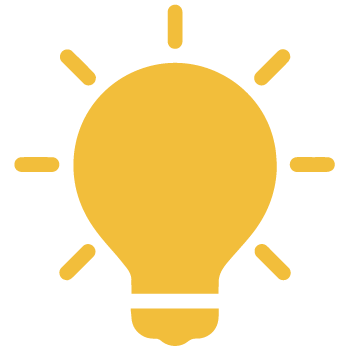

Day 01
Alternate Uses:
Alternate Uses is an ideation exercise that boosts divergent, out-of-the-box thinking.

Alternate Uses is an ideation exercise that boosts divergent, out-of-the-box thinking.

This is a fun and easy exercise that works for groups of all sizes. And by the end, you should have a wide mix of practical, unusual, and silly ideas. You might even be surprised at how creative you can get after a couple rounds of exercises. This activity is a great way to warm up your brain and get comfortable with your team before diving into a serious brainstorming.
Select a random item and hit the set timer button and come up with multiple ideas as you can and if possible try with different people to come with maximum ideas in this time frame.
« back to calendar